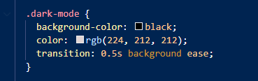
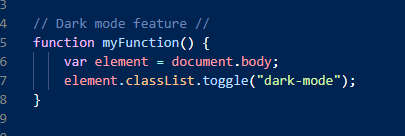

In this area we are gonna show you how to make the Dark Mode feature on your own homepage in a few easy steps. This dark mode feature is best if your using a "one pager" for the feature. If your having more than one site/sub sites on your homepage, it's a lot more difficult sadly.
For setting up your CSS file, we need to specify what dark mode exactly is and how it should look so that we can make a reference later to the script file. If we want to do it barebones, we only need to specify the background color and the text color for dark mode. For that we use "background-color" & "color". You can add some fancy features to if you want. We added a transition so it doesn't jsut pop but takes .5 seconds to turn into dark mode. After you did that it should like this:
for setting up the script we need to add some code to our button of choice and specify what it shall do. For that we need to add the "onclick" command and give it a name of our choice. Once that it done it should look like this:
Now that we have made the Preparation for the script, we now need to write it ourself. For that you need to use your javascript file your referenced to your html file. For that we first need to make a function and add the name you gave your button. After that you you press enter and write "var" (variable) and write "element = document.body;". With that you specify that it will use this funvtion for your whole body in html. Once you got that written, press enter. Then you need to specify what "element" is and what it does. For that you write "element.classList.toggle("dark-mode");" . That means that every time you press your button of choice it will either turn on/off dark mode. Once completed your script should look like this:
For this specific darkmode script, it always resets back to your non darkmode theme when you switch site via your navigation bar or refresh your site. You always need to manually toogle dark mode on your site to activate it. Adding permanent dark mode to your homepage is more advanced, complicated & takes more time to setup than this. So for this we go the beginner route for now.